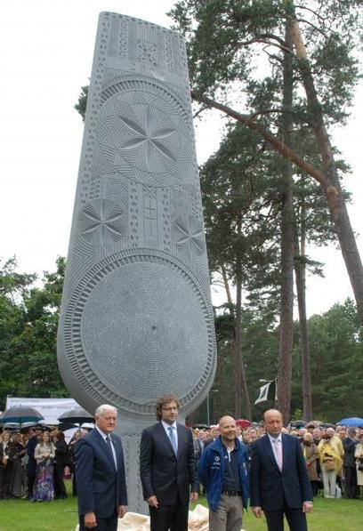

Lietuvos vardo paminėjimo tūkstantmečio proga buvo išrinktos iškiliausios ir labiausiai tautos vienybei nusipelniusios asmenybės. Pirminį pavardžių sąrašą sudarė Lietuvos mokslų akademija. Iš pasiūlytų asmenybių šimtą labiausiai nusipelniusių Lietuvos vienybei balsuodami internete rinko žmonės ir teikė kitas, jų manymu, tinkamas kandidatūras. Šimto žymių žmonių, veikusių įvairiose meno, mokslo bei kitose srityse, vardai ir pavardės yra iškaltos Tado Gutausko skulptūroje „Vienybės medis“.